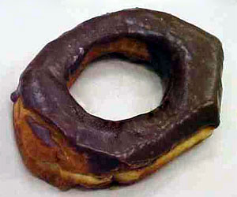

Smoke Rings
Pete's son Steven Vander Meer invented a new doughnut called the Smoke Ring when he was only about 16 years old. According to Steven:
"I was making raised doughnuts one morning, very early of course, and started goofing around with some raw ones. Stretched one or two out and then fried them just for fun. Got the idea for the name after dipping one in chocolate. Being as skinny as they are, they fry differently than a regular raised donut, they turn out a little crispier, so it's really not just a different shape."
This smoke ring could have used a little more stretching.
